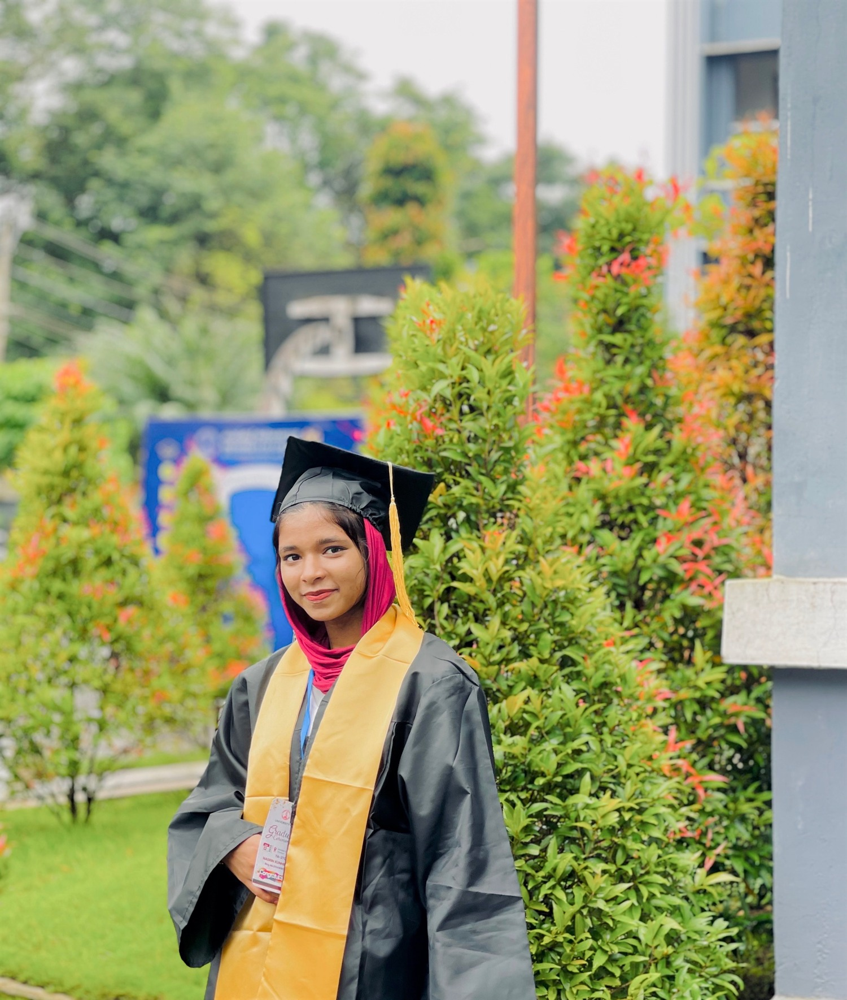
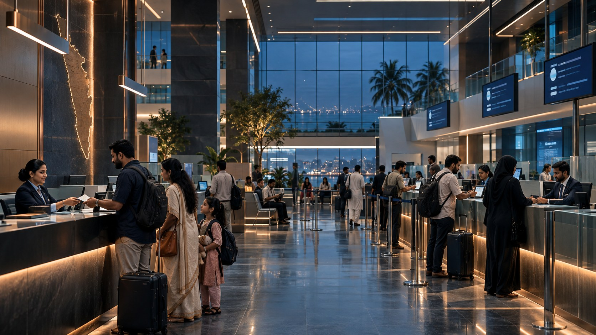

Verified learning and achievement records
HELLO, I'M NASRIN
ENGINEERING
DIGITAL
EXPERIENCES.
Nasrin Kunhimoidu
MCA STUDENT · ASPIRING TECHNOLOGY PROFESSIONALVIEW WORKMCA STUDENT
& ASPIRING TECHNOLOGY PROFESSIONAL
& ASPIRING TECHNOLOGY PROFESSIONAL
Building ideas, solving problems, and transforming technology into meaningful digital experiences.
PYTHON & WEB DEVELOPMENTTHOUGHTFUL COORDINATIONCONTINUOUS LEARNING
Major application case studies
Certified NSS volunteer hours
Expected MCA graduation

A milestone. A new beginning.01THE PERSON BEHIND THE WORK
Technology with
a human perspective.
I’m Nasrin, a BCA graduate and MCA student at MES College of Engineering, Kuttippuram. I build practical digital products with Python, Django, Flask, and modern web technologies.
I’m drawn to software that makes real work clearer and more connected. Communication, leadership, teamwork, and creative storytelling shape how I approach every project.
BASED INKerala, India
FOCUSDevelopment & IT project delivery
Nasrin Kunhimoidu
02ACADEMIC FOUNDATION
Built on learning.
Driven by curiosity.
From a foundation in computer applications
to deeper study and practical development.
2025 — 2027IN PROGRESS
Master of Computer Application (MCA)
MES College of Engineering, Kuttippuram
KTU University
2025COMPLETED
Bachelor of Computer Application (BCA)
Mar Dionysius College, Pazhanji, Thrissur
University of Calicut
03TOOLS & STRENGTHS
A practical toolkit.
A collaborative mindset.
The technologies I work with and the
strengths I bring to a team.
Programming
PythonJava
Web development
HTMLCSSJavaScriptDjangoFlaskMobile App Development
Database
SQLMySQL
Tools
GitGitHub
Productivity
Microsoft ExcelMicrosoft WordShared Spreadsheets
Other skills
CommunicationLeadershipTeamworkVideo EditingAnchoring
04SELECTED SYSTEMS
Digital systems,
told cinematically.
Two case studies designed around complex
operations and essential public services.
LIVE OPERATIONSAHSOPERATIONAL INDICATOR
01 / AERONEXUSNIGHT OPERATIONS
FEATURED ACADEMIC PROJECT
AeroNexus
Airport Operations Management System
A web-based operations and decision-support platform that brings airport information into a unified application.
WORKFORCEINCIDENTSPASSENGER SERVICESREPORTING

SERVICE NETWORK04CONNECTED MODULES
02 / KIMSCITIZEN SERVICES
ACADEMIC PROJECT
KIMS.
Kerala Immigration Management System
An integrated web application for Kerala immigrants to explore jobs, accommodation, documents, and official inquiries.
JOBSACCOMMODATIONDOCUMENT WALLETINQUIRIES
05CERTIFICATIONS & ACHIEVEMENTS
Proof of learning.
Momentum for what’s next.
Credentials across software, AI, project work,
community service, and academic achievement.
06GRADUATION & PERSONAL GALLERY
Milestones,
held in motion.
Graduation, achievement, and the moments
that made the journey memorable.
07EXPERIENCE & ACTIVITIES
Working with systems.
Connecting with people.
Professional practice, community service,
and the creativity I carry beyond code.
MAR 2026 — PRESENTRemote
Student Registration Coordinator
Learn by Vajra Office Center
Coordinate registration data processing, verification, status tracking, and management updates. Maintain documentation and resolve administrative issues.
NOV 2025 — PRESENTRemote
Online Tutor
Clasps Learn
Provide one-to-one online tutoring, adapt explanations to individual needs, and use collaborative tools to support understanding.
2020 — 2024Volunteer
NSS Volunteer
National Service Scheme
Completed two certified 240-hour NSS programmes and attended special camps, strengthening social responsibility, teamwork, and leadership.
2019 — 2020Cadet
JRC Cadet
Junior Red Cross
Passed the C-level examination with 48/50 and secured full attendance in unit activities while building discipline, service awareness, and confidence.
08THE JOURNEY SO FAR
Every chapter
builds the next.
Explore the moments shaping
my academic and professional path.
Onward, with purpose.
2025A foundation in computing
Completed BCA at Mar Dionysius College, affiliated with the University of Calicut.
AUG 2025The next academic chapter
Began the MCA programme at MES College of Engineering, Kuttippuram.
NOV 2025Learning through teaching
Started online tutoring with Clasps Learn.
MAR 2026From systems to coordination
Joined Learn by Vajra Office Center as a remote Student Registration Coordinator.
MAR 2027 · EXPECTEDLooking ahead
Expected MCA graduation, with an interest in software development and IT project delivery.
09RESUME
PROFILE / 2026One document.
One document.
The complete story.
Education, technical skills, selected projects, certifications, experience, and contact information in a concise professional format.
Download Resume10LET’S CONNECT
Let’s build
something
meaningful.
For opportunities in software development,
IT project delivery, or a thoughtful collaboration.